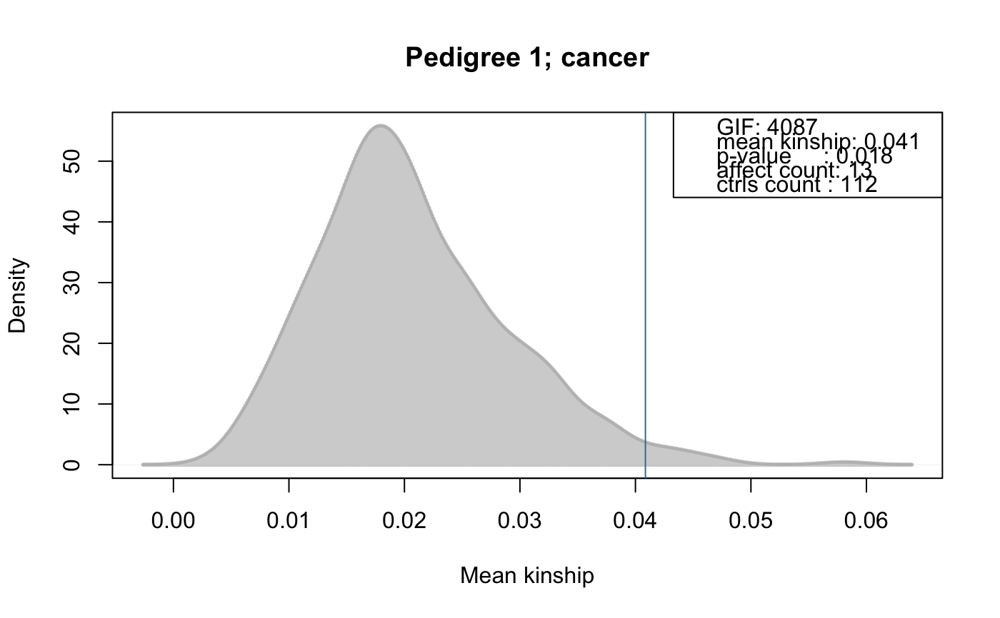

FAData-analysis.RdVarious functions to perform pedigree analyses and to investigate familial clustering of e.g. cancer cases.
binomialTest(object, trait, traitName, global = FALSE, prob = NULL,
alternative = c("greater", "less", "two.sided"))
estimateTimeAtRisk(startDate=NULL, startDateFormat="%Y-%m-%d",
endDate=NULL, endDateFormat="%Y-%m-%d",
incidenceDate=NULL, incidenceDateFormat="%Y-%m-%d",
deathDate=NULL, deathDateFormat="%Y-%m-%d",
allowNegative=FALSE, affected=NULL,
incidenceSubtract=0.5)
factor2matrix(x)
# S4 method for FAData
familialIncidenceRate(object, trait=NULL,
timeAtRisk=NULL)
# S4 method for FAData
familialIncidenceRateTest(object, trait=NULL,
nsim=50000, traitName=NULL,
timeAtRisk=NULL,
strata=NULL, ...)
# S4 method for FAData
fsir(object, trait=NULL, lambda=NULL, timeInStrata=NULL)
# S4 method for FAData
fsirTest(object, trait=NULL, nsim=50000, traitName=NULL,
lambda=NULL, timeInStrata=NULL,
strata=NULL, ...)
# S4 method for FAData
genealogicalIndexTest(object, trait, nsim=50000,
traitName, perFamilyTest=FALSE,
controlSetMethod="getAll",
rm.singletons=TRUE, strata=NULL, ...)
# S4 method for FAData
kinshipGroupTest(object, trait, nsim=50000,
traitName, strata=NULL, ...)
# S4 method for FAData
kinshipSumTest(object, trait, nsim=50000,
traitName, strata=NULL, ...)
# S4 method for FAData
probabilityTest(object, trait, cliques,
nsim=50000, traitName,
...)
sliceAge(x, slices=c(0, 40, Inf))
<!-- %connectedSubgraph(graph, nodes, mode="all", all.nodes=TRUE, ifnotfound) -->
| affected | For |
|---|---|
| allowNegative | For |
| alternative | For |
| cliques | A named numeric or characted vector or factor with the names corresponding to ids of the individuals in the pedigree. The ids will be internally matched and sub-set to the ids available in the pedigree. |
| controlSetMethod | For |
| deathDate | For |
| deathDateFormat | For |
| endDate | For |
| endDateFormat | For |
| global | For |
| incidenceDate | For |
| incidenceDateFormat | For |
| incidenceSubtract | For |
| lambda | Numeric vector with the incidence rates per stratum from the
population. The length of this vector has to match the number of
columns of argument |
| nsim | The number of simulations. |
| object | The |
| perFamilyTest | For |
| prob | For |
| rm.singletons | For |
| slices | For |
| startDate | For |
| startDateFormat | For |
| strata | For |
| timeAtRisk | A numeric vector specifying the time at risk for each
individual. The definition for this variable is taken from Kerber
(1995). See description of the method below for more information.
|
| timeInStrata | For |
| trait | A named numeric vector (values If trait is not specified, the trait information stored within the
|
| traitName | The name of the trait (optional). |
| x | For |
| ... | For For |
Stratified sampling: some of the familial aggregation methods allow to use stratified sampling for the Monte Carlo simulations. In stratified sampling, the same number of random samples will be selected within each class/stratum then there are among the affected. As example, if 5 female and 2 male individuals are affected in the analysed trait and sex stratified sampling is performed, in each permuatation the same number of random samples in each group (i.e. 5 females and 2 males) are selected.
A note on singletons: for all per-individual measures, unconnected individuals within the pedigree are automatically excluded from the calculations as no kinship based statistic can be estimated for them since they do, by definition, not share kinship with any other individual in the pedigree.
Evaluate whether the number of affected in a trait are higher than
expected by chance using a simple binomial test. In contrast to
most other methods presented here, this does not use the kinship
between affected individuals, but simply performs a binomial test
for each family considering the numbers of affected within the
family, the size of the family and the global probability of being
affected. The latter is by default calculated on the data set
(ratio between the total number of affected in the pedigree and
the total number of phenotyped individuals), can however also be
specified with the prob argument. The test is performed using the binom.test. The function returns a FABinTestResults object.
Calculate the familial incidence rate (FIR, or FR) as defined in [Kerber
1995], formula (3). The FIR is an estimate for the risk per
gene-time for each individual for a certain disease (trait) given
the disease experience in the cohort. The measure considers the
kinship of each individual with any affected individual in the
pedigree and the time at risk for each individual. Internally, the function first excludes individuals from the test
which have a missing value (NA) either in the argument
trait or in the argument timeAtRisk. Next, the thus
reduced pedigree, is further cleaned by removing all resulting
singletons (i.e. individuals that do not share kinship with any
other individual in the above reduced data set). The method returns a vector with the FIR value for each
individual. Individuals that were excluded from the test as
described above habe an FIR of NA.
Calculates the familial incidence rate for each individual and in
addition assesses the significance of these based on Monte Carlo
simulations. See FAIncidenceRateResults for
more details. The method returns a FAIncidenceRateResults
object.
Calculate the familial standardized incidence rate (FSIR) as
defined in [Kerber, 1995], formula (4). The FSIR weights the
disease status of relatives based on their degree of relatedness
with the proband [Kerber, 1995]. Formally, the FSIR is defined as
the standardized incidence ratio (SIR) or standardized morality
ratio in epidemiology, i.e. as the ratio between the observed and
expected number of cases, only that both are in addition also
weighted by the degree of relatedness (i.e. kinship value) between
individuals in the pedigree. Similar to familialIncidenceRate, the function excludes
individuals with missing values in any of the arguments
trait, timeInStrata (and optionally strata)
and all individuals that do not share any kinship with any other
individual in the pedigree after removing the above individuals. The method returns a vector with the FSIR value for each
individual. Individuals excluded as above describe have a FSIR value
of NA.
Calculates the familial standardized incidence rate (FSIR) for
each individual and in addition assesses the significance of these
based on Monte Carlo simulations. See
FAStdIncidenceRateResults for more details. The method returns a FAStdIncidenceRateResults
object.
Performs the genealogical index analysis from [Hill
1980] (also known as the genealogical index of
familiality or genetic index of familiality) to identify
familial clustering of traits (e.g. cancers etc). This test calculates the mean kinship among affected individuals in a
pedigree along with mean kinships of equal sized random control
sets drawn form the pedigree. The distribution of average kinship
values among these random sets is used to estimate the probability
that the observed mean kinship between the affected individuals is due
to chance.
The controlSetMethod argument allows to specify the method
to define sets of matched control individuals in a pedigree or
family. Note that by default singletons (i.e. unconnected individuals in
the pedigree) are removed from the pedigree prior the
analysis. Set rm.singletons=FALSE if you do not want them
to be removed. The method can also be performed separately for each family within
the larger pedigree (perFamilyTest=TRUE to evaluate the
presence of clustered affected within each family).
In this case it is also possible to
use controlSetMethod="getGenerationMatched" or
controlSetMethod="getGenerationSexMatched", which allows to
draw random control samples from the same generation(s) than the
affected are. Stratified random sampling can be performed with the strata
argument. See details for more information. The function returns a FAGenIndexResults object.
Performs a familial aggregation test on a subset of a family. The
idea behind this test is to narrow down the set of controls for
each affected individual by considering only individuals that are
as closely related as the most distant affected individual. This
strategy incorporates more the family structure of the cases and
is meant to be an alternative to the kinshipSumTest
method. Initially, for an affected individual i a group C(i)
is created that contains all individuals that share kinship as far as
the most distantly related affected individual. This cluster can be
interpreted as a circle that is centered at individual i with
radius equal to the most distantly related case. Therefore, the
cluster defines a narrowed, individual-specific set of individuals
in which the phenotype is assumed to have been passed on.
Groups consisting of the same set of affected individuals are
reduced to a single group (i.e. the group with the smallest total
number of individuals). Based on this definition of groups C(i), we compute two
statistics by performing Monte Carlo simulations (which optionally
allow to perform stratified random sampling). During each
simulation step affected cases are randomly sampled from the
population. 1. The ratio test counts per group C(i) the number of times
we observe a higher number of affected individuals in the simulation
than in the observed case. Dividing this number by the number of
simulation steps yields immediately the p-value that describes the
event to observe by chance a higher number of affected individuals
than in the given case. 2. The kinship test addresses the degree of relatedness within the
simulated set by a counting method where we count the number of times
in a simulation step there is a pair of affected individuals that are
more closely related than in the observed group C(i). In case
the closest degree of relatedness is equal in both the simulation
step and the observed case, we look at the number of pairs found in
both and count it if this number is higher in the simulation
step. Again, dividing this count by the number of simulation steps
readily yields a p-value. See also the method runSimulation for
FAKinGroupResults. The function returns a FAKinGroupResults object.
Performs a test for familial aggregation based on the sum of kinship
values between affected cases. This test highlights individuals that
exhibit a higher than chance relationship to other affected
individuals, therefore highlighting individuals within families
aggregating the phenotype. To achieve this, for each affected
individual the sum of kinship values to all other affected cases is
computed. In a Monte Carlo simulation this is repeated with the same
number of cases (and optionally stratified with the strata
argument), and the resulting background distribution is used to
compute p-values for the kinship sums obtained from the observed
cases. See also the method runSimulation for
FAKinSumResults. The function returns a FAKinSumResults object.
DEPRECATED: this test will be removed in Bioconductor version 3.8
due to problems and incompatibilities of the gap package on
MS Windows systems. This is only a convience method that calls the gap package's
method pfc.sim to compute probabilities of familial clustering
of phenotypes [Yu and Zelterman (2002)]. One drawback of that method
is that it is limited to families with at most 22 individuals. Thus,
pedigrees need to be split with specialized software such as Jenti
[Falchi and Fuchsberger ea. (2008)], which within large families
define cliques that can then be used as input to this algorithm. See also method runSimulation for
FAProbResults. The function returns a FAProbResults object.
Converts a factor into a matrix with columns corresponding to the
levels and values (cell row i, column j) being either 0 or 1
depending on whether the ith factor was of the level j. See
examples below for in or FAStdIncidenceRateResults.
Function to calculate the time at risk based on the start date of
the study or the birth date of an individual (startDate)
and the study's end date (endDate), the date of an
incidence (e.g. date of diagnosis of a cancer
incidenceDate) or the death of the individual
(deathDate). The time at risk for each individual is
calculated as the minimal time period between startDate and
any of endDate, incidenceDate or
deathDate. Thus it is also possible to provide just the
endDate along with the startDate, in which case the
endDate should be the earliest time point of: end date of
the study, incidence date or date of death. For affected individuals (those for which either an incidence date
is provided or the value in the optional argument affected
is TRUE or bigger than 0), by default half of the time unit
is subtracted. For example, a individual that has an incidence
after 2 days is 1.5 days at risk. The proportion of the time unit
to subtract can be specified with the argument
incidenceSubtract. The function returns a numeric vector with the time at risk in
days.
Generates a matrix with columns corresponding to age slices/strata
defined by argument slices and rows to individuals. Each
cell in a row represents the time spent by the individual in the
age slice/strata. See example below.
Refer to the method and function description above for detailed information on the returned result object.
Rainer J, Talliun D, D'Elia Y, Domingues FS and Weichenberger CX (2016) FamAgg: an R package to evaluate familial aggregation of traits in large pedigrees. Bioinformatics.
Hill, J.R. (1980) A survey of cancer sites by kinship in the Utah Mormon population. In Cairns J, Lyon JL, Skolnick M (eds): Cancer Incidence in Defined Populations. Banbury Report 4. Cold Spring Harbor, NY: Cold Spring Harbor Laboratory Press, pp 299--318.
Kerber, R.A. (1995) Method for calculating risk associated with family history of a disease. Genet Epidemiol, pp 291--301.
Yu, C. and Zelterman, D. (2002) Statistical inference for familial disease clusters. Biometrics, pp 481--491
Falchi, M. and Fuchsberger, C. (2008) Jenti: an efficient tool for mining complex inbred genealogies. Bioinformatics, pp 724--726
########################## ## ## Defining a small pedigree ## ## load the Minnesota Breast Cancer record and subset to the ## first families. data(minnbreast) mbsub <- minnbreast[minnbreast$famid==4 | minnbreast$famid==5 | minnbreast$famid==14 | minnbreast$famid==8, ] mbped <- mbsub[, c("famid", "id", "fatherid", "motherid", "sex")] ## renaming column names colnames(mbped) <- c("family", "id", "father", "mother", "sex") ## create the FAData object fad <- FAData(pedigree=mbped)#>#>## We specify the cancer trait. tcancer <- mbsub$cancer names(tcancer) <- mbsub$id ########################## ## ## Familial Incidence Rate ## ## Calculate the FR for each individual given the affected status of ## each individual in trait cancer and the time at risk for each ## participant. We use column "endage" in the minnbreast data.frame ## that specifies the age at the last follow-up or incident cancer as a ##rather impresice estimate for time at risk. fr <- familialIncidenceRate(fad, trait=tcancer, timeAtRisk=mbsub$endage)#>#>#>#>#>#>#>#>## Perform in addition Monte Carlo simulations to assess the significance ## for the familial incidence rates. frRes <- familialIncidenceRateTest(fad, trait=tcancer, timeAtRisk=mbsub$endage, nsim=500)#>#>#>#>#>#>#>#>#> trait_name total_phenotyped total_affected total_tested id family #> 446 NA 129 15 88 446 14 #> 449 NA 129 15 88 449 14 #> 453 NA 129 15 88 453 14 #> 445 NA 129 15 88 445 14 #> 454 NA 129 15 88 454 14 #> 447 NA 129 15 88 447 14 #> fir pvalue padj #> 446 0.007424662 0.002 0.1173333 #> 449 0.006915362 0.004 0.1173333 #> 453 0.006629813 0.004 0.1173333 #> 445 0.006758000 0.008 0.1760000 #> 454 0.006481794 0.014 0.2464000 #> 447 0.005487605 0.028 0.4000000########################## ## ## Familial Standardized Incidence Rate: ## Please see examples of FAStdIncidenceRateResults. ########################## ## ## Perform familial aggregation analyses using the genealogical index ## gi <- genealogicalIndexTest(fad, trait=tcancer, traitName="cancer", nsim=500)#>#>#>#>#>#>result(gi)#> trait_name total_phenotyped total_affected entity_id entity_ctrls #> 1 cancer 129 15 1 112 #> entity_affected genealogical_index pvalue padj #> 1 13 4086.538 0.018 0.018## A significant clustering of cancer cases was identified in the ## analyzed pedigree. ## Plotting the observed mean kinship and the distribution of mean kinship ## from the random sampling. plotRes(gi)########################## ## ## Perform familial aggregation analysis using the kinship sum test ## kcr <- kinshipSumTest(fad, trait=tcancer, traitName="cancer", nsim=500)#>#>#>#>kcr#> FAKinSumResults object with: #> * Pedigree of length 191. #> * Number of unique individuals: 191. #> * Number of families: 4. #> * Number of individuals in largest family: 70. #> * Number of individuals in smallest family: 38. #> Information on trait 'cancer' #> * Number of non-NA values: 129. #> * Number of non-zero values: 15. #> Result info: #> * Number of rows of the result data.frame: 15. #> * Number of simulations: 500.#> trait_name total_phenotyped total_affected affected_id family affected #> 447 cancer 129 15 447 14 15 #> 450 cancer 129 15 450 14 15 #> 451 cancer 129 15 451 14 15 #> 452 cancer 129 15 452 14 15 #> 142 cancer 129 15 142 8 15 #> 444 cancer 129 15 444 14 15 #> kinship_sum freq pvalue padj #> 447 1.000 0.2133333 0.004266667 0.0565 #> 450 0.875 0.6800000 0.015066667 0.0565 #> 451 0.875 0.6800000 0.015066667 0.0565 #> 452 0.875 0.6800000 0.015066667 0.0565 #> 142 0.625 2.9600000 0.078000000 0.1950 #> 444 0.625 2.9600000 0.078000000 0.1950########################## ## ## Perform familial aggregation analysis using the kinship group test, ## stratifying by sex ## kr <- kinshipGroupTest(fad, trait=tcancer, traitName="cancer", nsim=500, strata=fad$sex)#>#>#>#>#>#>#>#>kr#> FAKinGroupResults object with: #> * Pedigree of length 191. #> * Number of unique individuals: 191. #> * Number of families: 4. #> * Number of individuals in largest family: 70. #> * Number of individuals in smallest family: 38. #> Information on trait 'cancer' #> * Number of non-NA values: 129. #> * Number of non-zero values: 15. #> Result info: #> * Dimension of result data.frame: 3. #> * Dimension of result data.frame: 14. #> * Number of simulations: 500.#> trait_name total_phenotyped total_affected phenotyped affected group_id #> 447 cancer 129 15 43 11 447 #> 136 cancer 129 15 43 11 136 #> 11 cancer 129 15 43 11 11 #> family group_phenotyped group_affected ratio_pvalue ratio_padj mean_kinship #> 447 14 12 5 0.006 0.018 0.2500000 #> 136 8 19 4 0.178 0.267 0.1666667 #> 11 4 12 2 0.550 0.550 0.1250000 #> kinship_pvalue kinship_padj #> 447 0.000 0.000 #> 136 0.154 0.231 #> 11 0.490 0.490########################## ## ## Estimate the time at risk given ## ## Define some birth dates and incidence dates and end date of study bdates <- c("2012-04-17", "2014-05-29", "1999-12-31", "2002-10-10") idates <- c(NA, NA, "2007-07-13", "2013-12-23") edates <- rep("2015-09-15", 4) ## Estimate the time at risk. The time period is returned in days. riskDays <- estimateTimeAtRisk(startDate=bdates, incidenceDate=idates, endDate=edates)#>#>#>#>#>#>riskDays#> [1] 1246.0 474.0 2750.5 4091.5########################## ## ## Define the time spent in an age stratum given the indivduals' ## age at incidence or end of study. head(mbsub$endage)#> [1] NA 78.05886 55.50000 48.00000 75.00342 53.63997## We "slice" the age in specified intervals/slices stratAge <- sliceAge(mbsub$endage, slices=c(0, 40, 60, Inf)) head(stratAge)#> (0, 40] (40, 60] (60, Inf] #> [1,] NA NA NA #> [2,] 40 20.00000 18.05886 #> [3,] 40 15.50000 0.00000 #> [4,] 40 8.00000 0.00000 #> [5,] 40 20.00000 15.00342 #> [6,] 40 13.63997 0.00000## The first column lists the number of years spent in the first age ## stratum (0 < age <= 40) and the second in the second stratum ## (40 < age <= Inf) ## We could also stratify the disk days from above in per year strata. sliceAge(riskDays/365, slices=c(0, 2.5, 5, 10, 20))#> (0, 2.5] (2.5, 5] (5, 10] (10, 20] #> [1,] 2.50000 0.9136986 0.000000 0.000000 #> [2,] 1.29863 0.0000000 0.000000 0.000000 #> [3,] 2.50000 2.5000000 2.535616 0.000000 #> [4,] 2.50000 2.5000000 5.000000 1.209589########################## ## ## Simple example for factor2matrix: generate a matrix for factor $sex head(factor2matrix(fad$sex))#> M F #> 1 1 0 #> 2 0 1 #> 3 0 1 #> 4 0 1 #> 5 1 0 #> 6 1 0